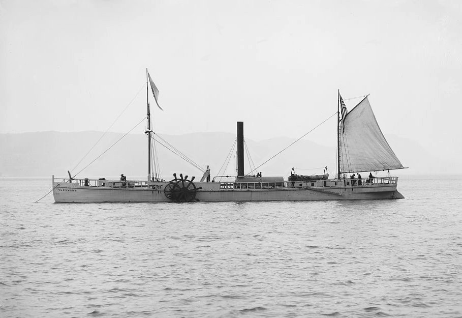

ClermontThe North River Steamboat or North River, colloquially known as the Clermont, is widely regarded as the world's first vessel to demonstrate the viability of using steam propulsion for commercial water transportation.[2] Built in 1807, the North River Steamboat operated on the Hudson River – at that time often known as the North River – between New York City and Albany, New York. It was built by the wealthy investor and politician Robert Livingston and inventor and entrepreneur Robert Fulton (1765–1815). Livingston had obtained Livingston had obtained from the New York legislature the exclusive right to steam navigation on the Hudson River. In 1803, while Livingston was Minister to France, Fulton's company built a small steamboat and tested it on the Seine. With this success, Livingston then contracted with Fulton to take advantage of his Hudson River monopoly and build a larger version for commercial service. Their larger steamer was built at the Charles Browne shipyard in New York and was fitted with Fulton's innovative steam engine design, manufactured for Livingston and Fulton by Boulton and Watt in Birmingham, England. Before she was later widened, the vessel's original dimensions were 150 feet (46 m) long × 12 feet (3.7 m) wide × 7 feet (2.1 m) deep; she drew a little more than 2 feet (60 cm) of water when launched. The steamer was equipped with two paddle wheels, one each to a side; each paddle wheel assembly was equipped with two sets of eight spokes. She also carried two masts with spars, rigging, and sails, likely a foremast with square sail and a mizzen mast with fore-and-aft sail (spanker), with the steam engine placed amidships, directly behind the paddle wheel's drive gear machinery.[citation needed]
My first steamboat "My first steamboat on the Hudson's River was 150
feet long, 13 feet wide, drawing 2 ft. of water, bow and stern 60
degrees: she displaced 36.40 [sic] cubic feet, equal 100 tons of
water; her bow presented 26 ft. to the water, plus and minus the
resistance of 1 ft. running 4 miles an hour."[3]: 192 Fulton's
published specifications after Steamboat's widening and general
rebuild:[citation needed] |
|